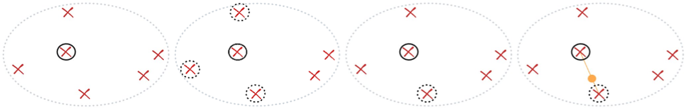
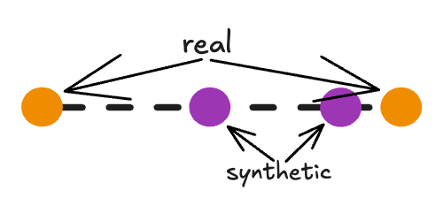
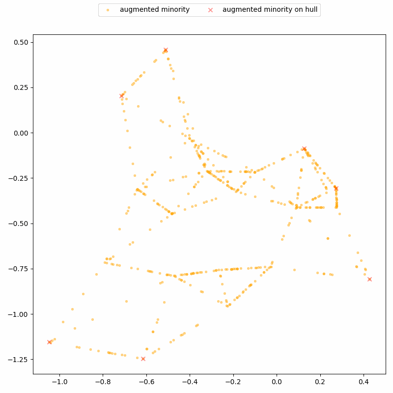
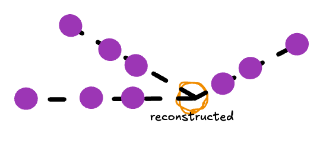
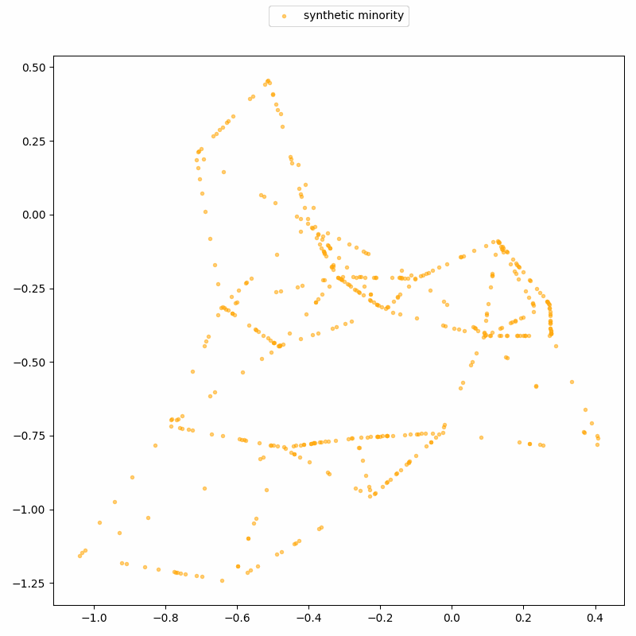

Guest post: Balancing your dataset? Mind the privacy leaks!
This blog post is written by Georgi Ganev; I helped with editing and am delighted to host it here as a guest post. If you’d also like to contribute a post about your research to this blog, don’t hesitate to get in touch!
Imagine that you're building a machine learning classifier detecting a rare disease or financial fraud. Most of your data comes from healthy patients or legitimate transactions, while positive cases (i.e., the presence of disease or fraud) are few and far between. When you evaluate your model, you notice something worrying: performance is much worse on these rare cases. The model struggles precisely where mistakes are most costly. This is a common problem in real-world datasets, where some classes (or combinations of features) are severely underrepresented.
What should you do then? A widely used solution is SMOTE (Synthetic Minority Over-sampling Technique), a data augmentation method that creates synthetic examples of the rare class to “balance” the dataset before training the classifier. SMOTE is a go-to tool for fixing imbalanced datasets: simple, flexible, built into most ML stacks, and widely trusted — including in industries handling sensitive personal data.
How SMOTE works
SMOTE does not invent new minority data from scratch. Instead, it reuses what is already there. The process works like this:
- Select a real underrepresented/minority record randomly (red cross in black circle).
- Find its k (here k=3) nearest minority neighbors (red crosses in black dotted circles).
- Select one of these neighbors randomly (remaining red cross in black dotted circle).
- Create a synthetic record by interpolating between the two records: pick a point at a random proportion along the line connecting them (orange dot on orange line).

Do this many times, and your dataset looks “balanced”, with more points in previously sparse regions corresponding to underrepresented/minority groups.
Note that every synthetic point is an interpolation between real individuals in the original data. Given that SMOTE is widely used on sensitive data, it makes sense to ask: does this lead to real-world privacy risks? As we show in a new paper, recently accepted at ICLR 2026, the answer is yes: privacy attacks can uncover which records are synthetic, and even reconstruct real data points. Let’s see how they work!
Distinguishing between real and fake records
First, we can easily and quickly distinguish between real and fake-generated records using a conceptually simple yet powerful attack, called DistinSMOTE. This is bad news: it means that if someone gains access to a SMOTE-augmented dataset (e.g., internal analysts or data scientists), they can expose the original sensitive individuals.
How does it work? We saw earlier that SMOTE generates synthetic points by drawing straight lines between real minority data points. Therefore, the real points lie at the ends of these lines, while the synthetic points lie strictly in between.

DistinSMOTE exploits this geometric structure to iteratively identify these interpolation patterns, and perfectly separates real from synthetic records, achieving 100% precision and 100% recall. Here’s a demo on a toy, two-dimensional dataset: it shows synthetic records being detected along lines, and removed over time until only real records remain.

So, sharing the augmented dataset is clearly not a great idea. But what if we only share the synthetic data? This must be better for the privacy of the real sensitive records — after all, synthetic data is supposed to be more privacy-friendly.
Reconstructing real records
Unfortunately, this intuition is wrong. Following a similar but more ambitious approach, called ReconSMOTE, we can reverse-engineer the original real data. This means that if someone has access to SMOTE-generated data alone, they can reconstruct the original sensitive records and expose their privacy.
Again, the attack uses the fact that SMOTE-generated points lie on straight line segments between real data points. By identifying where these segments intersect, we can recover the locations of the real records.

ReconSMOTE iteratively identifies the line segments and their intersections, allowing it to recover the original minority records with 100% precision (no false positives) and recall approaching 100% for realistically imbalanced datasets — for example, with ratios of 1:20 or higher. Here’s a demo on the same toy dataset: first, lines formed by three or more synthetic records are identified…

… then their intersections are identified to reconstruct real records.
Clearly, practitioners should avoid using SMOTE in privacy-sensitive settings. But what about AI researchers — are they aware of SMOTE’s privacy risks?
SMOTE is used as a privacy baseline
Perhaps surprisingly, SMOTE is commonly used by AI researchers as a privacy baseline when evaluating synthetic data generation models. In fact, several papers published at top-tier AI conferences (e.g., TabDDPM [ICML'23], Tabsyn [ICLR'24], ClavaDDPM [NeurIPS'24], TabDiff [ICLR,’25], CDTD [ICLR,'25], etc.) compare their proposed diffusion models against SMOTE and use this comparison to argue that their methods are privacy-preserving.
These works typically follow a similar evaluation workflow:
- Propose a new diffusion model, not explicitly designed for privacy-sensitive settings.
- Evaluate privacy using an empirical privacy metric such as distance to closest record (DCR), and observe that this metric looks better on the new diffusion model than on SMOTE.
- Conclude that the proposed diffusion model is therefore “privacy-preserving”.
This workflow has several fundamental limitations. Prior work has already shown that empirical metrics like DCR are inadequate privacy measures and, more importantly, do not correlate with more robust approaches for empirical privacy measures, like membership inference attacks.
In our new paper, we show that the situation is even worse, and that SMOTE is dramatically less private than previously recognized. This directly undermines step 2 of the workflow above. If a model appears slightly more (or slightly less) “private” than a baseline that is itself clearly non-private, and this comparison is made using a flawed privacy metric, what meaningful conclusion can actually be drawn? Likely none.
Takeaways
Until now, SMOTE was widely assumed to be safe from a privacy perspective, mainly because simple checks like “can I tell real from fake?” or “how close is a synthetic record to its closest real record (e.g., using DCR)?” did not reveal obvious leakage.
We show this assumption is wrong, and that SMOTE is fundamentally non-private: its interpolation process inherently involves privacy leakage, even when implemented perfectly.
Worse, it puts minority records disproportionately at risk: the very samples SMOTE aims to amplify and make more representative are the most exposed. If SMOTE is used in regulated or sensitive environments, leakage is not a hypothetical — it is real and measurable.
Our work not only shows that SMOTE is a flawed privacy baseline, but is also an important reminder that naive privacy metrics like DCR are misleading and should not be used to validate other generative models.
For more details about the attacks and their practical impact, you can refer to the full paper.
Note: To be clear, SMOTE is still perfectly fine in non-private settings. It is fast and intuitive, so it is great for prototyping/testing ideas, debugging pipelines, or teaching ML concepts. For internal-only experiments where privacy is not a concern, it is still one of the easiest ways to handle imbalanced datasets and generate synthetic data. The risk only comes when SMOTE-augmented/generated data involves sensitive populations and/or leaves the secure environment.